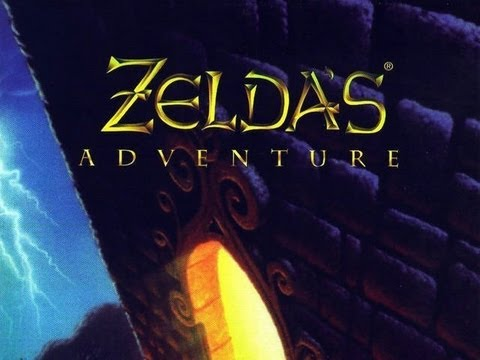

Zelda’s Adventure schloss die CD-i-Trilogie ab und teilt deren Stärken und Schwächen: ambitionierte Ideen, aber eine uneinheitliche Umsetzung. Für Historiker interessant, für Kanon-Enthusiasten meist irrelevant.
| Titel | Zelda’s Adventure |
| Veröffentlichung | 1994/1995 (regionale Unterschiede) |
| Plattform | Philips CD-i |
| Entwickler | Viridis / Philips |
| Produzent | Philips (Lizenz) |
| Komponist | Various |
Zelda’s Adventure mischt FMV-Ästhetik mit einer rudimentären Top-Down-Erfahrung. Technisch limitiert, mit inkonsistenter Kollisionsabfrage und schwachem Pacing; inhaltlich ambitioniert, doch spielmechanisch unausgegoren. Relevanz vor allem historisch-lizenzpolitisch.